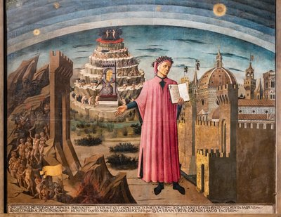
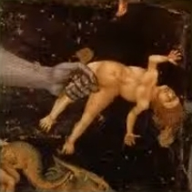

| LA VITA | |||
|
|||
| LE OPERE | |||
|

|  |
| Ritratto di Dante Alighieri, la città di Firenze e l'allegoria della Divina Commedia di Domenico di Michelino (1465) Il poeta presenta la propria opera aperta davanti a sé e sta in piedi di fronte al paesaggio simbolico della Divina Commedia: a sinistra l'Inferno; sullo sfondo il Paradiso, al quale conducono i sette cerchi del Purgatorio; a destra la città di Firenze. |
La Divina Commedia Questo poema venne composto da Dante Alighieri durante l'esilio, tra il 1304 e il 1321, ossia nelle parole del poeta: "Nel mezzo del cammin di nostra vita/mi ritrovai per una selva oscura,/ché la diritta via era smarrita." L'epoca è quella del grande giubileo indetto a Roma da Papa Bonifacio VIII, oltre 700 anni fa. Dante aveva 35 anni ("il mezzo del cammin" della vita, secondo i criteri dell'epoca) quando, nella in occasione della Pasqua durante la primavera del 1300, intraprese il proprio cammino verso l'Aldilà. Intitolato dall'autore stesso Commedia (nel significato di opera con inizio negativo e conclusione positiva) e denominato Divina Commedia nel XVI secolo da un editore di Venezia, Ludovico Dolce, il capolavoro dantesco (cominciato intorno al 1304 e terminato intorno al 1321) è composta da 14233 endecasillabi in terza rima, organizzati in 100 canti suddivisi a loro volta in tre parti:
Questa cronaca divenne immediatamente famosissima. La gente del popolo, gli artigiani toscani, cominciarono ben presto ad imparare l'Inferno a memoria e, più tardi, durante il doloroso esilio, i Principi illuminati spesso convocarono Dante presso di loro per sentir parlare di quello che l'autore stesso aveva definito nel Paradiso il "sacrato poema". La Firenze di Lorenzo de Medici, nel XV secolo, tributò a Dante un vero e proprio culto. Leonardo, Raffaello e Michelangelo lo chiamarono loro maestro e Botticelli impiegò oltre 10 anni per illustrare ciascuno dei suoi 100 canti. Nel XVI secolo, Francesco I e la sorella Margherita fondarono un'accademia dantesca presso la quale si leggeva ogni sera la Commedia. Paolo VI fece incidere il nome di Dante, ben dopo la sua morte, nel battistero di Firenze dove era stato battezzato. Jorge Luis Borges, nei "Nove saggi danteschi", ha commentato in modo assai lusinghiero l'opera di Dante. Tra le centinaia di personaggi che popolano la Commedia, egli ne ha ricordati in modo particolare quattro: Ulisse, Ugolino da Pisa, Francesca e Beatrice. Dante, in viaggio verso il Paradiso, ha creato la più cristiana delle opere mai scritte da mano umana e, secondo Borges, la coscienza di lanciarsi in un'avventura pericolosa che avrebbe potuto esporlo alla vendetta dei suoi nemici gli ha consentito di identificarsi con Ulisse. Dante ha ascoltato con infinita compassione il racconto dell'adultera Francesca e, invece di respingerla, ha dimostrato (sempre secondo Borges) ammirazione e invidia nei confronti di questi amanti "maledetti" (Paolo e Francesca appunto), condannati ad essere in eterno trascinati nelle fiamme della bufera infernale, poiché si sono amati di amore reciproco. Quanto diversa la storia di Dante e Beatrice... La Commedia è un'opera di rara densità, che abbraccia tutto ciò che a quel tempo poteva contenere un animo umano e che ha colpito i suoi contemporanei per la freschezza, il vigore e la crudezza del linguaggio. La struttura della Commedia è chiaramente basata sul numero 3, che rappresenta la trinità divina, e sul 10, che è un numero perfetto, (Beatrice di presenta al canto XXX del Purgatorio e pronuncia il nome di Dante nello stesso canto al verso 73). Si tratta del racconto di un fantastico viaggio nell'Aldilà compiuto nel corso della Settimana Santa dell'anno 1300 da Dante stesso, smarritosi nel mezzo del cammino della sua vita nella foresta oscura del peccato e salvato dal pericolo grazie all'intercessione della beata Beatrice, realizzando un salvifico pellegrinaggio nell'Altro Mondo, guidato da Virgilio (il grande poeta romano che simboleggia la ragione umana) nell'Inferno e nel Purgatorio, poi da Beatrice nel Paradiso (che simboleggia la Scienza Divina). Il viaggio compiuto da Dante ha un significato allegorico e rappresenta l'itinerario che l'uomo deve percorrere al fine di sfuggire alle passioni terrene per ottenere l'Illuminazione delle libertà morali e della Fede, un cammino che va dall'istinto e dall'ignoranza verso la coscienza della Verità e della Salvezza. Dante espone dunque la sua concezione dell'Aldilà mediante un pellegrinaggio sovrannaturale attraverso Inferno, Purgatorio e Paradiso. Dopo avere assistito a svariate processioni mistiche e metamorfosi fantasmagoriche, Dante vede apparire Beatrice al momento del suo arrivo in Paradiso, mentre Virgilio scompare discretamente. È quindi con Beatrice che egli prosegue il suo viaggio di ascesa verso il Paradiso, rappresentato secondo le teorie aristoteliche e tolemaiche, arrivando infine all'ineffabile visione di Dio grazie alla guida di San Bernardo. La Commedia si conclude con l'integrazione assoluta del sapere filosofico nella verità di Dio, l'elevazione dell'amore al rango di principio fondamentale di ogni bene e di ogni male, la risoluzione dei problemi politici attraverso la dottrina della legittimità universale ed eterna dell'Impero. La Divina Commedia si inserisce nella vasta tradizione di visioni dell'Aldilà e lascia grande spazio alla tradizione greco-latina. Il viaggiatore dell'Aldilà è circondato da poeti e mostra sempre preoccupazioni da poeta. Il poema è redatto in 1° persona, ma il nome di Dante verrà pronunciato una sola volta da Beatrice. Questa struttura prismatica dell'io narratore è senza precedenti e anticipa le più moderne innovazioni letterarie. Dante è il soggetto del poema, è onnipresente in esso anche se non ne costituisce l'effettivo argomento. Non è possibile dare un'immagine anche schematica dell'universo della Commedia, mentre è invece possibile tratteggiare l'ordine che presiede alla descrizione dei tre regni (dannazione, penitenza e beatitudine). L'Inferno è caratterizzato da un potente pathos, il Purgatorio da un'emozione più penetrante e il Paradiso dal trionfo del miracoloso sull'immaginario. |
|
L'Inferno  Delle tre cantiche che compongono la Divina Commedia, la più nota, la più popolare è senz'altro l'Inferno. L'Inferno situato sotto Gerusalemme si presenta come una sequenza di 9 cerchi concentrici sempre più ristretti man mano che si sprofonda verso il centro. I dannati sono distribuiti nei cerchi in base alla classificazione aristotelica dei peccati: dopo il Limbo (cerchio in cui si trovano coloro che sono morti senza avere ricevuto il Battesimo), vi sono i lussuriosi, i golosi, gli avari, i prodighi, gli iracondi, i pigri, gli eretici (puniti nel 6° cerchio), i violenti (nel 7°), i fraudolenti, i seduttori, gli adulatori (nell'8°), i traditori (nel 9° con Lucifero); ogni cerchio è ulteriormente suddiviso in zone. Virgilio e Dante discendono uno ad uno i cerchi del baratro infernale. Tempeste, ghiaccio, fuoco, demoni crudeli... più ci si immerge nel peccato, più ci si avvicina a Lucifero e più la sofferenza è grande. L'Inferno contiene i canti più conosciuti e alcuni degli episodi più celebri, come quello di Francesca di Rimini (V) morta a causa del suo amore passionale (in lei si identificheranno infatti i romantici del XIX secolo). Dante e Beatrice non sono dunque la sola coppia importante nella Divina Commedia. Nel 2° cerchio dell'Inferno, quello dei lussuriosi, tra i "peccatori carnali" si trovano anche Paolo e Francesca, i protagonisti di un dramma che la tradizione colloca nel 1275. Francesca da Rimini è sposata con Giovanni Malatesta, ma si innamora del bel fratello di lui, Paolo, che ricambia il suo amore. Giovanni sorprende gli amanti abbracciati e li uccide. Quando incontra Dante, Francesca accetta di raccontare la nascita del suo amore per Paolo: "Noi leggiavamo un giorno per diletto/di Lancialotto come amor lo strinse;/soli eravamo e sanza alcun sospetto./Per più fïate li occhi ci sospinse/quella lettura, e scolorocci il viso;/ma solo un punto fu quel che ci vinse./Quando leggemmo il disïato riso/esser basciato da cotanto amante,/questi, che mai da me non fia diviso,/la bocca mi basciò tutto tremante./Galeotto fu 'l libro e chi lo scrisse:/quel giorno più non vi leggemmo avante". Molti pittori, come ad esempio Ingres, hanno spesso rappresentato questa scena. Molti sono i personaggi che Dante incontra sul suo cammino: Farinata degli Uberti (X); Pier della Vigna (XIII); Brunetto Latini (XV); Guido da Montefeltro (XXVIII); Ulisse, che gli racconta l'ultimo fatale viaggio oltre le colonne d'Ercole (ossia, oltre i limiti consentiti della conoscenza umana); l'enigmatico Conte Ugolino, vittima di un crudele arcivescovo e probabilmente divoratore disperato dei suoi propri figli. Dante deve avvinghiarsi al collo di Virgilio che scende aggrappandosi ai peli di Lucifero tricefalo, imprigionato nel ghiaccio, per allontanarsi dall'Inferno. Questo è un episodio "terrificante", in cui si vedono Giuda, peccatore assoluto (la cui parte superiore del corpo è già stata inghiottita dalla testa rossa centrale di Lucifero), nonché Bruto e Cassio, colpevoli di lesa maestà contro l'Imperatore romano Cesare (i cui corpi fuoriescono dalle due bocche laterali delle teste bianca e nera di Lucifero). Occorre veramente tutta l'autorità di Virgilio per sottrarre Dante al senso di pietà che risvegliano in lui i tormenti dei dannati. |
|
Il Purgatorio
Il Purgatorio situato agli antipodi di Gerusalemme, nell'emisfero australe, a la forma di una montagna conica dalla cima aguzza. Dopo avere attraversato la base della montagna, formata da una spiaggia circolare, i viaggiatori proseguono verso l'alto risalendo una scoscesa scarpata, l'antipurgatorio, luogo di attesa in cui si espia la negligenza (sia politica che religiosa). In questo luogo, rinasce la speranza: la lussuria, l'ira, l'invidia, la gola hanno condotto qui un'umanità la cui anima non è stata indurita dalle proprie colpe; è infatti il pentimento che mette i peccatori sulla via della Salvezza. I due viaggiatori percorrono quindi sette cornici scavate circolarmente sul fianco della montagna e che corrispondono ai sette peccati capitali. Da notare nel Purgatorio: le invettive politiche che Catone l'Uticense, l'incontro con Manfredi (sfortunato erede di Federico II), la feroce descrizione morale della valle dell'Arno (XIV), la requisitoria di Ugo Capeto contro la monarchia francese (XX). Sulla vetta di questa montagna, Dante ritrova Beatrice, pronta a condurlo nel Paradiso; ella pronuncia per la prima ed unica volta il nome di Dante, mentre Virgilio è già scomparso. Ma colei che una volta era stata una mortale teneramente amata da Dante, riveste in questa occasione un ruolo ben diverso: anima ormai disincarnata, ella diventa un'allegoria, il simbolo della Verità, una figura mediatrice (come la Vergine), senza l'aiuto della quale il poeta "peccatore" non potrebbe accedere al regno dei Cieli. |

|
Il Paradiso
In realtà, il cuore del grande progetto della Commedia è il Paradiso. Uno degli obiettivi di questa cantica è mostrare Beatrice trionfante nella gioia del Paradiso e "dire di lei quello che mai non fue detto d'alcuna". Il Paradiso è quindi espresso sotto forma di elogio per una donna. Esso consente inoltre a Dante di esporre le proprie idee religiose. Dalla luna all'empireo passando per i pianeti e le stelle, il Paradiso è formato da 9 cieli, più l'Empireo celeste, sede di Dio; ognuno di questi livelli corrisponde a un grado di felicità. La felicità degli eletti si misura dall'intensità della luce, della gioia e dell'amore che li fa volteggiare in un impeto eterno. Il Paradiso è un regno in incessante movimento e il viaggiatore percepisce il suo proprio spostamento solo attraverso il progressivo aumento della bellezza di Beatrice. Questo luogo di felicità perfetta è alla fine quasi insostenibile, poiché vi regna un eccesso di emozione, energia e capacità di discernimento. È necessaria una metamorfosi interiore per essere in grado di sostenere la bellezza dell'Eletta e lo splendore della Musica e della Luce. Descrivere il Paradiso comporta il superamento dell'Umano attraverso le parole. Tutto il Paradiso è scandito da dichiarazioni di impossibilità di scrivere il Paradiso stesso. In particolare, vi si trovano personaggi come Giustiniano, Carlo Magno, San Bernardo. Le più grandi figure della Cristianità si trovano lì per salutare Dante, un beato "in potenza". Nella cantica si legge l'elogio di San Francesco e di San Domenico, che conduce in seguito all'aspra denuncia dei loro degenerati discepoli, nonché il racconto dell'incontro con il trisavolo del poeta, Cacciaguida (proprio come Enea incontra il padre Anchise nell'Eneide di Virgilio), che gli conferma l'antichità del loro lignaggio e denuncia la decadenza morale e politica della Firenze contemporanea. Dante dovrà superare un triplice esame: di fronte a San Pietro sulla Fede, di fronte a San Giacomo sulla Speranza e di fronte a San Giovanni sulla Carità. Alla fine di questa processione celeste, Beatrice scompare per lasciare il posto a San Bernardo in vista dell'ultima tappa. San Bernardo rivolgerà una preghiera alla Vergine in favore di Dante prima che questi immerga lo sguardo nella Luce Divina; gli ultimi canti del Paradiso sono caratterizzati da un'estrema rarefazione luminosa, la più astratta e la più pura ("O luce etterna che sola in te sidi"). Il poeta non ha più parole per descrivere l'estasi che l'ha rapito. Questi illustri passaggi sono "impegnati" poiché correlati alla realtà politica contemporanea (lotte civili, conflitti dinastici, debolezze e disonesti compromessi della Chiesa, l'infruttuoso tentativo di restaurare il potere imperiale in Italia con Enrico VII di Lussemburgo). Man mano che la Commedia procede, l'orizzonte politico di allarga da Firenze alla Toscana, dalla Toscana all'Italia, dall'Italia all'Europa e infine dall'Europa alla terra intera. Si può notare che Dante non riporta mai il nome della propria famiglia - del padre, della madre, dei figli - e che la vanità dell'autobiografia gli è pertanto assolutamente estranea. I tratti conferiti alla sua persona sono quelli che la rendono altamente rappresentativa dell'umanità intera alla ricerca della felicità terrena. Il mondo descritto da Dante appare di certo un mondo di altri tempi (per contenuto storico e dottrinale), ma si rivela anche estremamente attuale per la sostanza morale, l'angosciante incertezza del futuro (portatore secondo Dante di una prossima fine dei tempi), la dimensione planetaria in cui si sviluppa e il linguaggio poetico di "portata" illimitata. Occorre leggere l'opera nella sua interezza, senza fermarsi a dei piccoli brani scelti, per cogliere le lacerazioni dell'anima, le ansiose attese di grandi speranze e gioie sovrumane. Il disegno generale della Divina Commedia contempla il viaggio di un uomo verso Dio, viaggio che si conclude con la visione della Trinità. L'insegnamento del poema si rivolge a tutti e si basa sulla filosofia e la teologia scolastiche dei secoli XII e XIII. Non si tratta di un'opera di teologia, anche se Dante è un poeta cristiano. Egli è stato infatti il primo ad integrare la Chiesa nel processo di divenire delle società umane e a concepire una storia della Chiesa con momenti di gloria e periodi di crisi. Dante è molto critico, arrivando perfino a pronunciare delle invettive contro alcuni Papi (si veda il suo episodio personale riguardante Bonifacio VIII) e a ricordare con grande forza l'assoluto allontanamento dalla Chiesa "primitiva". Il poeta ama Firenze e non rinnega mai l'appartenenza a una comunità guelfa che aveva cacciato i ghibellini dalla città. Egli ritiene tuttavia che vivere "rettamente" nella società ed essere felici sulla terra sono importanti tanto quanto raggiungere la felicità eterna. Dante si allontana quindi decisamente dalla tradizione agostiniana dominante a quell'epoca. |